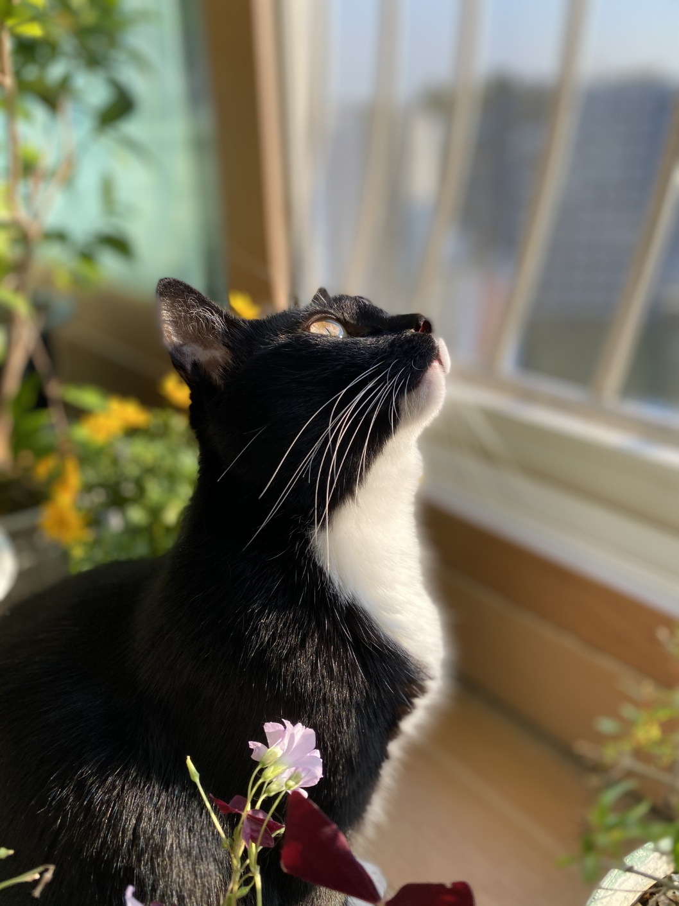
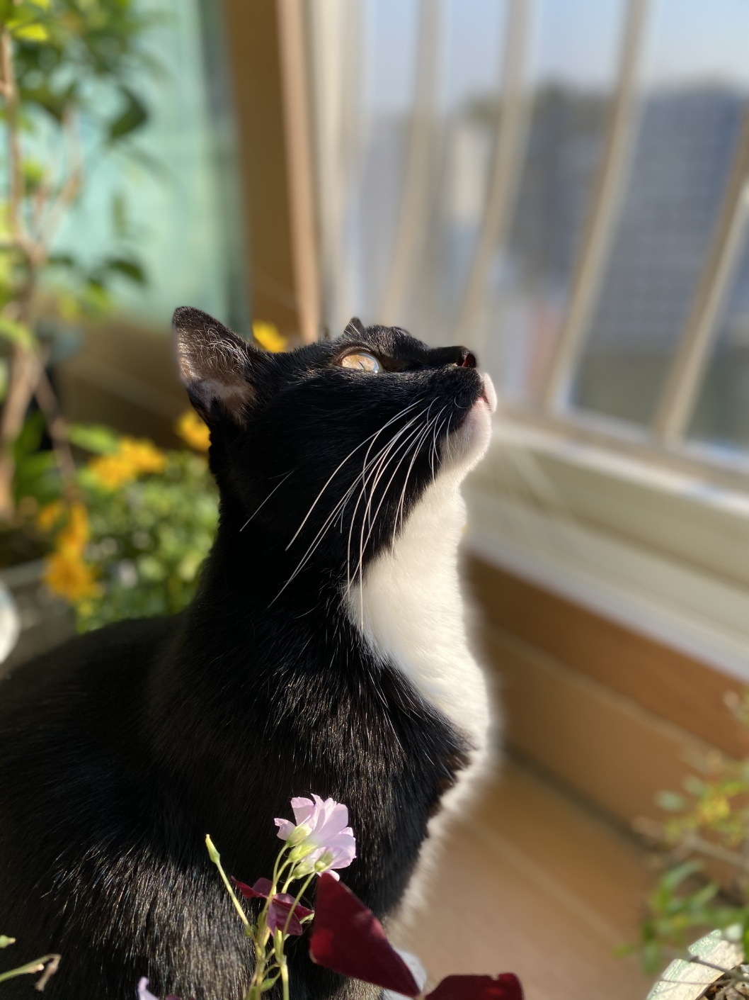
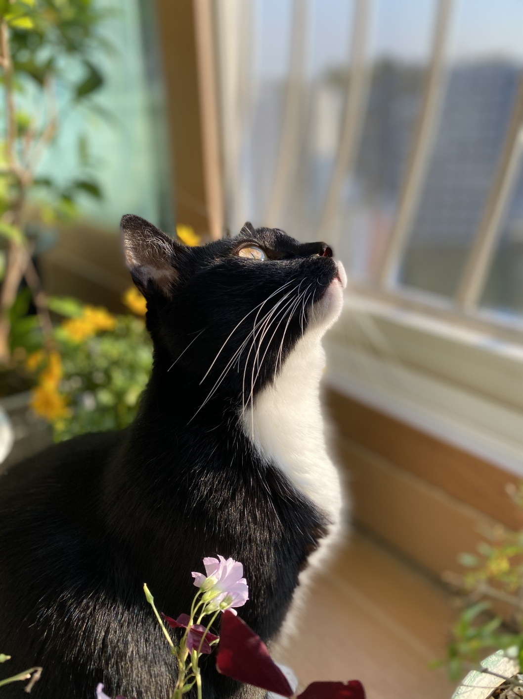

천민우의 코딩 세상

Python
C++
HTML
JV Script
(퀵메뉴)
Python
C++
HTML
JV Script
Go TOP
HTML 기초 문법 정리 (1)
1장 강의자료 (심미나 교수님 협찬)
# (클릭하기) 기초를 단단히 다지기 위해서는 철저한 복습이 중요하다. 항상 교수님의 말씀을 경청 해야 한다.
HTML 기초 문법 정리 (2)
2장 강의자료 (심미나 교수님 협찬)
# (클릭하기)# 웹 페이지의 기본 구조와 작성 방법을 상세히 알기 위해서는 다양한 관점에서 바라보려는 노력을 해야 한다.
HTML 기초 문법 정리 (3)
3장 강의자료 (심미나 교수님 협찬)
# (클릭하기)# 기초 문법을 활용하기 위해서 html 교재를 적극적으로 활용하자. 책을 반복해서 읽는게 정말 중요하다. """ """
(포털 사이트 모음)
컴퓨터 공학과 홈페이지
사이버 캠퍼스
HTML 학습용 GIT HUB
내일의 날씨

 천민우의 코딩 세상
천민우의 코딩 세상